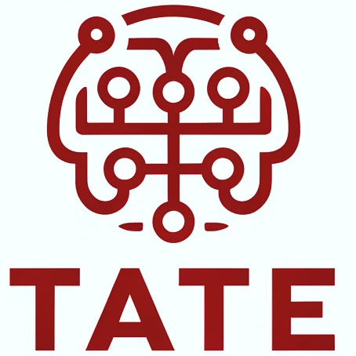

In TATE research conducted in our HCIR lab, we critically examine the foundation of existing user models and human-AI systems. We are committed to developing robust AI auditing and bias mitigation techniques, and we aim to foster sustainable human-AI collaborations. Our team also creates innovative programs and materials to train the next generation of researchers and technology leaders in the field of trustworthy AI. We envision a future where everyone can safely and inspiringly interact with AI systems that align with human ethics, contributing to a fair and healthy society supported by human-centered AI.